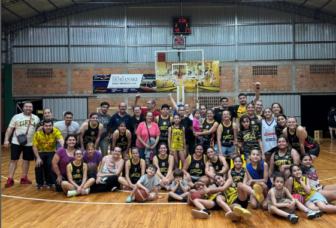

Torneo Pre Federal 2025 – Federación Misionera de Básquetbol
Torneo Pre Federal 2025 – Federación Misionera de Básquetbol
Pre Federal | Tirica, Capri y El Coatí serán locales en la 3ª fecha
La tercera fecha del Pre Federal de básquet en Misiones se pone en marcha este
miércoles
10 de septiembre, con el duelo entre Tirica y OTC
en
la Unión Cultural Eldorado desde las 21:30 hs.
La acción continuará el viernes 12 de septiembre, con dos partidos en simultáneo:
Mitre visitará a El Coatí en Eldorado y Capri
recibirá a
Tokio en Posadas. Ambos encuentros están programados para las 21:30 hs.
Tabla de posiciones
- 🏀 Mitre – 4 pts
- 🏀 OTC – 4 pts
- 🏀 El Coatí – 3 pts
- 🏀 Tokio – 3 pts
- 🏀 Tirica – 2 pts
- 🏀 Capri – 2 pts
Fuente: Instagram oficial de la Federación Misionera de
Básquetbol (FMBB).
Resumen: segunda fecha del Pre Federal en Misiones
El viernes 5 de septiembre dejó una jornada repleta de emociones en la segunda fecha del Pre
Federal misionero. Estos fueron los resultados más destacados:
Mitre vs CAPRI
Mitre se impuso como local a CAPRI por 92-65,
en un partido en el que el equipo auriazul impuso su juego con solvencia.


OTC vs El Coatí
OTC logró un importante triunfo ante El Coatí como visitante,
por 84-78, en un duelo que se definió en el último cuarto.


Tokio vs Tirica
Tokio logró su primer festejo en el torneo tras vencer ajustadamente a
Tirica por 89-87, en un duelo que se resolvió en los segundos
finales.


Tabla de resultados – Fecha 2
| Local |
Visitante |
Resultado |
| Mitre |
CAPRI |
92-65 |
| OTC |
El Coatí |
84-78 |
| Tokio |
Tirica |
89-87 |
Seguí con nosotros para estar al tanto de más resultados, estadísticas y la cobertura más completa
del Pre Federal en Basket TV.
Noche de Pre Federal: recibimos a Capri por la segunda fecha
Esta noche, nuestra cancha será el escenario de un nuevo capítulo del Pre Federal.
Desde las
21:30 horas, recibimos a CAPRI en el marco de la segunda fecha del
certamen.
El equipo buscará sumar una victoria importante frente a su gente, aprovechando la localía y el apoyo
de la
hinchada, que seguramente dirá presente para alentar durante todo el encuentro.
La expectativa es alta y se espera un partido intenso, con ambos conjuntos dejando todo para quedarse
con el
triunfo. Será una gran oportunidad para ver básquet de alto nivel y disfrutar de una noche a puro
deporte.
📍 Lugar: Nuestra cancha
🕤 Hora: 21:30 hs
🏆 Torneo: Pre Federal – Fecha 2
⚔️ Rival: CAPRI


¡Te esperamos para alentar y vivir juntos otra gran noche de básquet!
Inicio prometedor en la fecha inaugural
El Torneo Pre Federal 2025 de la Federación Misionera de Básquetbol comenzó con una
jornada cargada de emociones y grandes actuaciones individuales en la primera fecha disputada el
29 de agosto de 2025.
-
CAPRI 71 – 85 El Coatí
Miralo de nuevo
En el conjunto ganador el goleador fue,Valentín Labuckas con 35 puntos (6
triples).
Destacados en el Azzurro: Gaston Cichanowski (16 puntos) y
Alejo Gonzalez (13 puntos).
📅 Próxima fecha (05/09/25): CAPRI visitará a Mitre.
-
Tokio 83 – 72 OTC
En OTC, Koziarzki fue el máximo anotador con 23 puntos (incluyendo 7 triples),
acompañado por Reizner (18) y Costa (15).
En Tokio, se destacó Valentín Pleszak con 18 puntos.
📅 Próxima fecha (05/09/25): OTC de local ante El Coatí.
-
Tirica 59 – 81 Mitre
Pérez Douthat lideró al ganador con 21 puntos, mientras que
Hofbauer sumó 15 para el local.
📅 Próxima fecha (05/09/25): Tirica visitará a Tokio.
Liga Provincial Mayores Femenino 2025 – Federación Misionera de Básquetbol
Provincial Femenino | Tokio se quedó con el primero 🏀
Tokio se hizo fuerte en su casa y venció a Tirica por
64-45
en el primer juego de la final del Provincial Femenino. Fue un partido intenso,
con
gran nivel de juego
y momentos de mucha paridad en el primer tiempo.
En el conjunto local, la máxima anotadora fue Camila Venialgo con 11 puntos,
destacándose por su
efectividad y aporte defensivo. Por el lado de la visita, Paola Reyes brilló
con 16
puntos,
convirtiéndose en la figura del encuentro pese a la derrota.
El próximo duelo se disputará en la Unión Cultural Eldorado, con fecha y hora a
confirmar.
En caso de ser necesario un tercer partido, la definición será nuevamente en cancha de Tokio.
Fuente: Instagram oficial de la Federación Misionera
de
Básquetbol (FMBB).
Seguí toda la cobertura del Provincial Femenino y las transmisiones en vivo por
Basket TV.
Tirica es finalista de la Liga Provincial Femenina
En una noche de pura emoción en el Unión Cultural de Eldorado,
Tirica logró
clasificar a la final de la Liga Provincial Mayores Femenina al vencer a
Mitre
en el tercer juego de la serie semifinal, que estaba igualada 1-1.
El encuentro fue intenso desde el salto inicial, con ambos equipos dejando todo en la cancha para
quedarse con el
último pasaje a la gran definición. Tirica, respaldado por su gente, mostró carácter en los
momentos
clave,
ajustó la defensa y encontró eficacia en ofensiva para marcar la diferencia en el marcador.
Las felinas se apoyaron en una sólida labor colectiva, destacándose el trabajo
de
sus
jugadoras más experimentadas y el aporte de las más jóvenes, que supieron responder a la
exigencia
del partido
decisivo.
Con este triunfo, Tirica se instala en la gran final provincial y ahora se prepara para afrontar
el
desafío de
ir por el título. El equipo y la afición ya sueñan con levantar el trofeo, mientras el mensaje
es
claro:
¡Vamos chicas, a seguir con todo!

Fotos: Liga Provincial / Tirica Basket
Tirica y Mitre definen el pase a la final en un Juego 3 decisivo
La Liga Provincial Mayores Femenina vive una noche clave este miércoles
3 de
septiembre, cuando Tirica y Mitre se enfrenten en
el
tercer y último juego de las semifinales. El partido se disputará en el Unión Cultural
de
Eldorado desde las 21:30 horas.
La serie se encuentra igualada 1-1, tras dos encuentros muy parejos que dejaron
en
claro la paridad entre ambos equipos. El ganador de este compromiso se asegurará un lugar en la
gran
final del certamen, donde ya espera el vencedor de la otra llave semifinal.
El conjunto local, Tirica, buscará apoyarse en el aliento de su gente para dar
el
último paso y volver a una final provincial. Por su parte, Mitre intentará dar
el
golpe fuera de casa, apostando a la solidez defensiva y a la experiencia de sus jugadoras más
destacadas.
La expectativa en Eldorado es alta y se espera una gran convocatoria para este duelo definitorio
que
promete intensidad, nervios y emoción hasta el final.

Datos del partido
| Competencia |
Liga Provincial Mayores – Femenino |
| Instancia |
Semifinal – Juego 3 |
| Equipos |
Tirica vs Mitre |
| Serie |
Igualada 1-1 |
| Fecha |
Miércoles 3 de septiembre |
| Hora |
21:30 |
| Lugar |
Unión Cultural – Eldorado |
Fuente: Tirica Basket / Redes sociales
 Torneo Apertura 2025 – Asociación Posadeña de Básquetbol
Torneo Apertura 2025 – Asociación Posadeña de Básquetbol
🏀 Luz y Fuerza recibe a Brown en un duelo clave por el Torneo Apertura
Posadas, Misiones – 10 de septiembre de 2025
Este miércoles desde las 21:30, el estadio de Luz y Fuerza será escenario de un
nuevo capítulo del Torneo Apertura de la Asociación Posadeña de Básquetbol (APBB). El local se
enfrentará a Jorge Gibson Brown en un partido que promete intensidad, emoción y
puntos clave en la tabla.
⚡ Luz y Fuerza busca afirmarse
Con una campaña irregular hasta el momento, Luz y Fuerza llega con la necesidad de sumar para
mantenerse en la pelea. El equipo mostró destellos de buen juego en sus últimas presentaciones,
y confía en hacerse fuerte como local para frenar a un Brown que viene en alza.
🟢 Brown quiere seguir escalando
El Verdirrojo, por su parte, viene de una victoria importante y buscará aprovechar el envión
anímico para sumar fuera de casa. Con jugadores como Rodrigo Méndez y
Lucas Sosa en gran nivel, Brown apunta a consolidarse en la zona media de la
tabla y meterse en la conversación por los puestos de arriba.
🎟️ Entrada libre y clima de clásico
Se espera una gran concurrencia en el estadio de Luz y Fuerza, con entrada libre y gratuita. El
ambiente promete ser vibrante, con las hinchadas listas para alentar y vivir una noche de
básquet de alto voltaje.
La cita es a las 21:30. ¡No te lo pierdas!
🔥 Mitre se impone en un clásico inolvidable ante Tokio
Posadas, Misiones – 9 de septiembre de 2025
En una noche cargada de tensión y emoción, Bartolomé Mitre venció a Tokio por 89 a
87 en tiempo suplementario, en el marco de la cuarta fecha del Torneo Apertura de
la Asociación Posadeña de Básquetbol (APBB). El encuentro se disputó en el estadio Jorge R.
Yamaguchi y fue definido en los últimos segundos, con una actuación estelar de
Santino Clara, goleador del partido con 26 puntos.

⏱️ Un duelo parejo de principio a fin
Tokio comenzó mejor, dominando el primer cuarto con ataques efectivos y cerrando el parcial
20-17. Mitre respondió en el segundo segmento, pero el local se fue al descanso
con ventaja de 37-35.
En el tercer cuarto, Tokio estiró la diferencia hasta los 68-58, pero Mitre
reaccionó sobre el final con un cambio de actitud y precisión ofensiva. En el último minuto del
tiempo reglamentario, Clara anotó 7 puntos consecutivos para igualar el
marcador en 79-79 y forzar el suplementario.

🏁 Suplementario de infarto
El tiempo extra fue palo a palo. Tokio pasó al frente con una conversión de Aranda (87-86), pero
Clara volvió a aparecer con una penetración decisiva para poner el 89-87
definitivo. Moscoso tuvo la última chance desde la línea, pero no logró igualar el marcador.
Con esta victoria, Mitre se mantiene como único líder del torneo con 4
triunfos en 4 partidos, mientras que Tokio sufrió su primera derrota y quedó con
2 victorias y 1 caída.
📊 Tabla de posiciones actualizada
- 1. Mitre – 4 PJ / 4 PG / 0 PP / 8 pts
- 2. Villa Urquiza – 3 PJ / 2 PG / 1 PP / 5 pts
- 3. Tokio – 3 PJ / 2 PG / 1 PP / 5 pts
- 4. Brown – 3 PJ / 1 PG / 2 PP / 4 pts
- 5. CAPRI – 3 PJ / 1 PG / 2 PP / 4 pts
- 6. Itapúa – 4 PJ / 0 PG / 4 PP / 4 pts
- 7. Luz y Fuerza – 2 PJ / 1 PG / 1 PP / 3 pts
🏀 CAPRI brilla ante Itapúa y consigue su primer triunfo en el Torneo Apertura
Posadas, Misiones – 8 de septiembre de 2025
En una noche cargada de energía juvenil y precisión táctica, el Club CAPRI logró su primera
victoria en el Torneo Apertura de la Asociación Posadeña de Básquetbol (APBB), al vencer con
contundencia a Itapúa Tenis Club por 95 a 43. El encuentro, disputado el lunes
por la cuarta fecha del certamen, dejó en claro el potencial de los U17 del Azzurro.
🔥 Un inicio demoledor
Desde el primer cuarto, CAPRI impuso su ritmo con transiciones rápidas y una defensa agresiva. El
joven Tomás Richard fue la figura destacada del partido, anotando 22
puntos y liderando cada ofensiva con madurez y decisión. Acompañado por Cáceres y
Benítez Cruz, el equipo mostró cohesión y hambre de victoria.
Por su parte, Itapúa intentó responder con el empuje de Giménez, quien aportó
18 puntos, pero no logró frenar el vendaval ofensivo de CAPRI. Al cierre del
primer tiempo, el marcador ya mostraba una diferencia significativa: 49-24.

🧱 Defensa, velocidad y contundencia
En la segunda mitad, CAPRI mantuvo la intensidad. La defensa siguió asfixiando a Itapúa,
generando robos que se transformaron en puntos fáciles. Ayala y Santander se sumaron al show
ofensivo, mientras que el equipo rival se vio superado en todos los aspectos del juego.
El resultado final, 95-43, no solo refleja el dominio de CAPRI, sino también el
crecimiento de sus jóvenes talentos, que comienzan a dejar huella en el torneo.

📊 Así está la tabla
Con este triunfo, CAPRI suma 4 puntos (1 victoria, 2 derrotas) y se posiciona
junto a Brown, Tokio e Itapúa. Mitre lidera con 6 puntos (3-0), seguido por
Villa Urquiza con 5 puntos (2-1).
Vuelve la acción de la Asociación Posadeña de Básquetbol
Este lunes 8 de septiembre, la cita será en la cancha de CAPRI,
donde
Itapúa y CAPRI se enfrentarán en un nuevo capítulo del
Torneo de la Asociación Posadeña de Básquetbol.
Ambos equipos buscarán sumar una victoria importante para escalar en la tabla y seguir en la pelea
por los primeros puestos, en lo que promete ser un partido vibrante de principio a fin.
⏰ Hora: 21:30 hs
📍 Lugar: Cancha de CAPRI
¡No te lo pierdas! Una noche a puro básquet en la capital misionera.
Mitre se impone y sigue invicto en el certamen
El conjunto Auriazul (3-0) no tuvo piedad y superó como local a Los
Pileteros (0-3) por un contundente 108-28 en el cierre de la fecha 3
del certamen capitalino.
Valentín Clara fue el máximo anotador del equipo ganador con 22 puntos, mientras que
Nicolás Sánchez aportó 18 tantos para la visita. Con este resultado, los dirigidos
por Miguel mantienen su invicto en el torneo, mientras que su rival sigue sin
conocer la victoria.

Posiciones – APBB Mayores
| Equipo |
Puntos |
Récord |
| Mitre |
6 |
3-0 |
| Villa Urquiza |
5 |
2-1 |
| Tokio |
4 |
2-0 |
| Brown |
4 |
1-2 |
| Luz y Fuerza |
3 |
1-1 |
| Itapúa |
3 |
0-3 |
| CAPRI |
2 |
0-2 |
Fotos: APBB
Emoción en la jornada del martes 26 de agosto
El Torneo Apertura 2025 de la Asociación Posadeña de Básquetbol
vivió una fecha vibrante el
martes 26 de agosto de 2025, con dos partidos que mantuvieron en vilo a los
fanáticos hasta el final.
-
Tokio 79 – 67 Brown
El conjunto oriental impuso su ritmo desde el inicio, mostrando solidez defensiva y efectividad
en ataque para quedarse con una victoria clara sobre Jorge Gibson Brown.
📅 Próxima fecha: Tokio se enfrentará a CAPRI como visitante.
-
Villa Urquiza 65 – 60 CAPRI
En un partido muy parejo y definido en los últimos minutos, Villa Urquiza logró un triunfo clave
frente al Azzurro, mostrando carácter en los momentos decisivos.
📅 Próxima fecha: Villa Urquiza visitará a Brown.
Selección Argentina
Brasil campeón de la FIBA AmeriCup 2025
La FIBA AmeriCup 2025 llegó a su desenlace en Managua con una final sudamericana
intensa y de
bajo goleo, donde Brasil superó a Argentina para conquistar su
quinto título
continental y el primero desde 2009.


Resultado final:
- Brasil 55-47 Argentina — Un duelo definido por la defensa y el ritmo impuesto
por los brasileños desde el segundo cuarto. Yago dos Santos (MVP del torneo) lideró con 14
puntos y 5 asistencias, Bruno Caboclo aportó 11 puntos y 7 rebotes, y Vitor Benite clavó un
triple clave a falta de 1:53 para sellar la victoria.
Argentina, bajo la dirección de Pablo Prigioni, buscaba retener el título obtenido en 2022, pero tuvo
problemas ofensivos (con apenas 4/27 en triples) y no pudo quebrar la defensa brasileña. El marcador
combinado (102 puntos) fue el más bajo registrado en la historia de una final de AmeriCup.
Camino a la final
| Instancia |
Argentina |
Brasil |
| Cuartos de final |
Argentina 82-77 Puerto Rico (tiempo extra) |
Brasil 94-82 República Dominicana |
| Semifinal |
Argentina 83-73 Canadá |
Brasil 92-77 Estados Unidos |
| Final |
47 |
55 |
Estadísticas individuales destacadas (Final)
| Jugador |
Equipo |
Puntos |
Rebotes |
Asistencias |
Bloqueos/Stl (cuando aplicable) |
| Yago dos Santos |
Brasil |
14 |
— |
5 |
— (MVP) |
| Bruno Caboclo |
Brasil |
11 |
7 |
— |
— |
| Vitor Benite |
Brasil |
8 |
— |
— |
— |
| Georginho De Paula |
Brasil |
— |
— |
— |
5 bloqueos (récord de final) |
| Francisco Cáffaro |
Argentina |
11 |
— |
— |
— |
| José Vildoza |
Argentina |
8 |
— |
— |
— |
Resumen oficial en
FIBA.basketball
Con esta victoria, Brasil obtuvo su quinto título AmeriCup (el primero desde 2009), mientras que
Argentina cosechó su séptima medalla de plata y alcanzó su 15° podio histórico —el más en toda la
historia del torneo.

FIBA AmeriCup 2025 – Semifinales
Argentina y Brasil definirán el título continental
La FIBA AmeriCup 2025 ya tiene a sus dos finalistas. En Managua, las semifinales
dejaron dos partidos vibrantes que confirmaron el gran momento de las potencias sudamericanas.
Resultados de semifinales:
- Brasil 92-77 Estados Unidos — Remontada histórica: los brasileños firmaron un
parcial de 31-4 en el último cuarto para sellar el pase a la final.
- Argentina 83-73 Canadá — La Albiceleste frenó el invicto canadiense con un
juego sólido en defensa y una ofensiva equilibrada.

Más información en
FIBA.basketball
Con estos resultados, Argentina y Brasil jugarán la gran final por el título
continental, mientras que Canadá y Estados Unidos definirán el tercer puesto. Ambos
encuentros se disputarán en el Polideportivo Alexis Argüello, Managua.
Final y partido por el tercer puesto
Programación (hora local Managua):
- 3.er puesto: Canadá vs. Estados Unidos – 31 de agosto, 17:10
- Final: Argentina vs. Brasil – 31 de agosto, 20:10
La gran final promete un duelo de alto voltaje entre dos selecciones históricas, mientras que el
clásico norteamericano buscará cerrar con un podio el certamen.
FIBA AmeriCup 2025: definidos los cuartos de final y primeros resultados
La fase de grupos terminó en Managua y se definieron los emparejamientos de los cuartos de final para
la FIBA AmeriCup 2025. Aunque aún restan varios partidos por disputarse, ya se
registraron los primeros resultados impactantes.
- Canadá (1) vs. Colombia (8)
- Puerto Rico (4) vs. Argentina (5)
- Estados Unidos (3) vs. Uruguay (6)
- República Dominicana (2) vs. Brasil (7)
Resultados conocidos (Cuartos de Final):
- República Dominicana 82-94 Brasil — Brasil avanza a semis.
- Puerto Rico 77-82 Argentina (tiempo extra) — Argentina avanza a semifinales tras una remontada
espectacular liderada por Juan Fernández (18 puntos y 8 tapones) y José Vildoza (18 puntos y
triples
decisivos).
En semifinales, Argentina enfrentará hoy, sábado 30 de agosto a las 21:10 (hora argentina), a
Canadá en el Polideportivo Alexis Argüello de Managua. El partido se podrá ver en
vivo
por TyC Sports y DSports. El ganador disputará la gran final de la
AmeriCup 2025.
Victoria agónica y clasificación a cuartos de final

En su siguiente partido, Argentina logró una victoria casi milagrosa ante Colombia: con un doble en
la última posesión de Nicolás Brussino, la Albiceleste ganó 84-83 y clasificó a los cuartos de final
de la AmeriCup 2025 (El
Destape, Olé).
Este triunfo coloca a Argentina segunda en el Grupo C y a la espera de conocer su próximo rival
(posiblemente Canadá o Puerto Rico) (El Destape).

Ajustada derrota y pelea al cierre del partido

El 24 de agosto de 2025, Argentina perdió contra República Dominicana por 84-83 en tiempo
suplementario, en un partido cargado de tensión y emociones (Diario AS, Ámbito).
Tras el encuentro, se desató una pelea entre jugadores de ambos equipos (Diario AS,
Ámbito).
Sanciones disciplinarias impuestas por FIBA
El Panel Disciplinario de FIBA, tras analizar los incidentes ocurridos tras el partido del 24 de
agosto en Managua, impuso las siguientes sanciones (fiba.basketball, San
Antonio Express-News, Todo Noticias):
- Selección Argentina: Gonzalo Bressan: suspendido por dos partidos oficiales
FIBA. Francisco Caffaro y Juan Vaulet: suspendidos por un partido cada uno. Pablo Prigioni
(entrenador): multado con 2.000 francos suizos (~USD 2.500). Federación Argentina de Básquet:
multa de 20.000 francos suizos (10.000 en suspenso por tres años).
- República Dominicana: David Jones-García: suspendido por dos partidos oficiales
FIBA. Juan Guerrero y Juan Suero: un partido de suspensión cada uno. Ángel Delgado: suspendido
un partido con periodo probatorio de tres años. Federación Dominicana de Baloncesto: multa de
20.000 francos suizos (10.000 en suspenso por tres años).